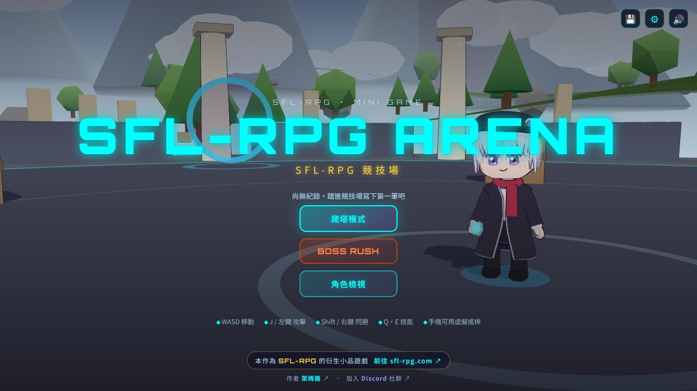
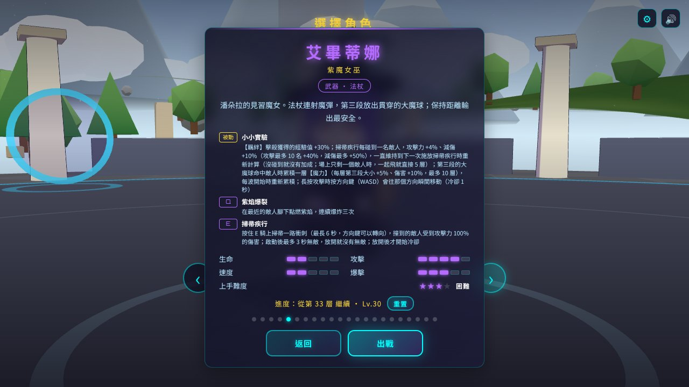
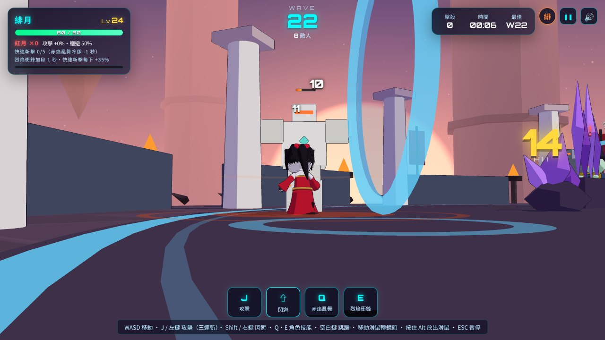
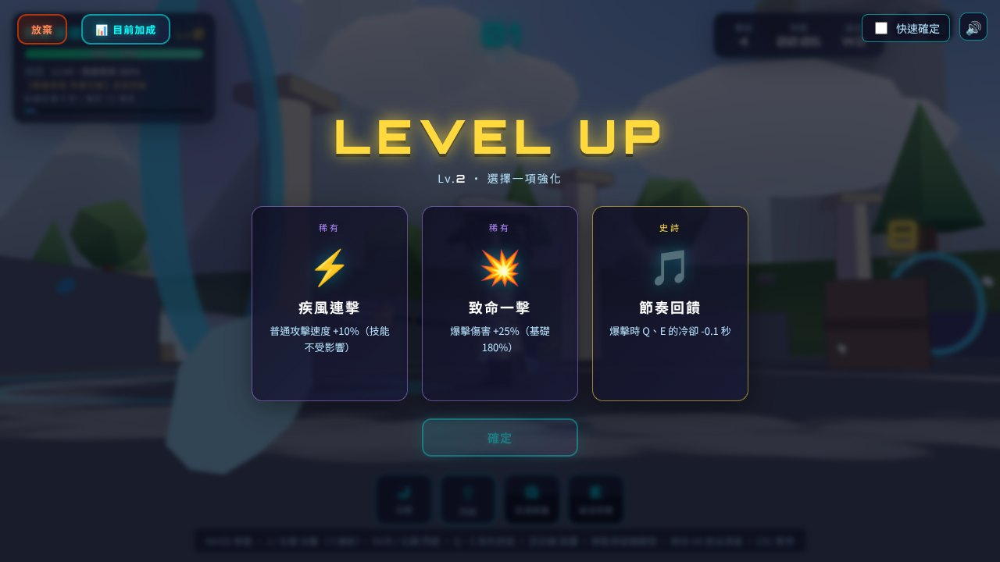
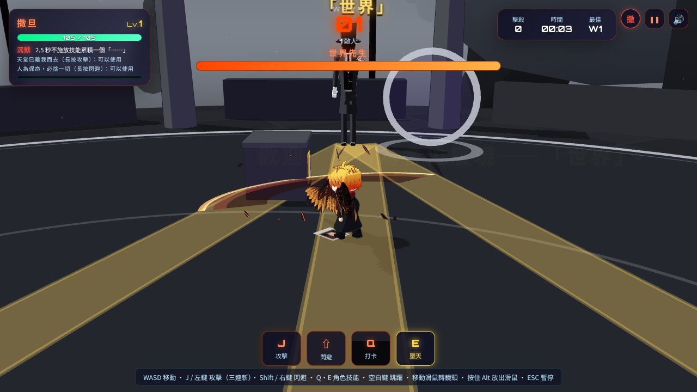
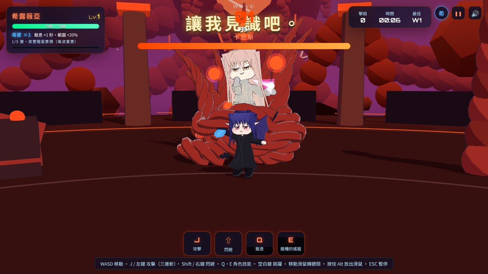

從 SFL-RPG 衍生出來的 Q 版即時動作小品。從 22 位角色中挑一位進入競技場，打倒一波波怪物，升級時三選一挑強化卡，一路爬到第 150 層；也可以直接挑戰連戰 30 場 Boss 的 BOSS RUSH。登場角色與 Boss 大多改編自 SFL-RPG 的夥伴與劇情人物，打開瀏覽器就能玩，不用安裝或註冊。




Boss 大多取自 SFL-RPG 的劇情人物，像是帝國大臣迪菲爾、造物主時空萬象，第 150 層則是寰宇本源科詩莫斯。招式依照原作設定設計，有彈幕、場地機制與半血變身，每隻 Boss 也配上 SFL-RPG 本家的專屬 BGM。


Three.js + Vite，純前端靜態網站，手機與電腦皆可遊玩。
不使用外部 3D 模型，角色、怪物與場景都由程式生成，角色採骨骼動畫與卡通渲染。
沒有後端與資料庫，紀錄存在瀏覽器，可匯出加密存檔帶到其他裝置。
SFL-Arena 是 SFL-RPG 的衍生小品，做完即收工，不另外營運，主力作品仍是 SFL-RPG。本專案為非營利性質，僅作為個人學習與社群交流之用，所有設計與開發皆不涉及商業或收費行為。